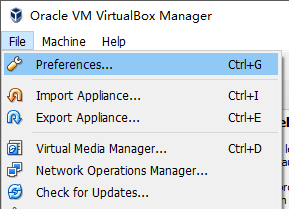
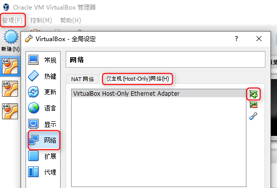
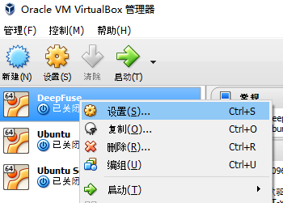
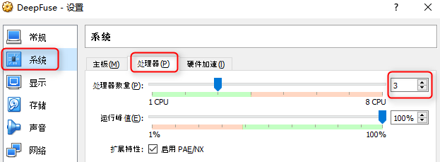
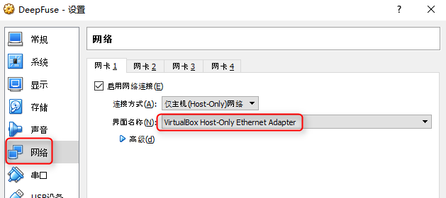
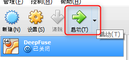

使用预安装的VirtualBox镜像
下载
首先下载VirtualBox安装文件 ：Windows版，OSX版
还需要下载预安装Ubuntu的VirtualBox镜像文件 ：百度网盘
安装VirtualBox
运行VirtualBox-5.1.6-110634-Win.exe之后一路点next就可以了。

安装以后，如果有需要，可以切换到中文
菜单 File - Preferences

选择Language

创建一个虚拟本地网络
菜单选择 管理 - 全局设定 - 网络 - 仅主机网络 - 添加一个新的网络

管理，导入虚拟电脑

选中DeepFuse.ova文件，生成一个新的虚拟机

右键进入设置，改一下cpu和内存，给虚拟机的cpu越多越好

再到网页设置里选中刚才创建的网络

随后启动虚拟机

启动后不需要任何干预，虚拟机会自动登陆并启动深度熔合服务器
接下来就可以使用网页界面生成图像了